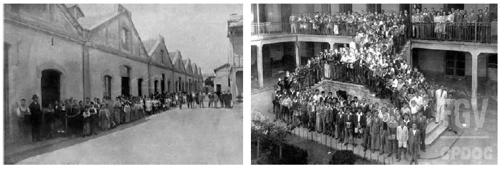
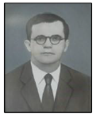

A história...

Ensino Industrial de 1942 a 1959 no Nível Ginásio Industrial.
Ensino Técnico Integrado de 1959 a 1965 de Nível Médio.
Em 1941, foi promulgada uma série de leis conhecida como a "Reforma Capanema", que redesenhou completamente o cenário educacional do país. Esta reforma apresentava os seguintes pontos:
O ensino profissional foi elevado à categoria de nível médio. O acesso às escolas industriais passou a depender de exames de admissão. Os cursos foram segmentados em dois níveis, correspondentes aos dois ciclos do novo ensino médio: O primeiro incluía os cursos básicos industrial, artesanal, de aprendizagem e de mestria. O segundo ciclo correspondia ao curso técnico industrial, com duração de três anos e um adicional de estágio supervisionado na indústria, abrangendo diversas especialidades. Em 1942, por meio de um Decreto-Lei, foi implementada a Lei Orgânica do Ensino Industrial, refletindo a decisão governamental de realizar mudanças profundas na estrutura do ensino técnico. A partir dessa reforma, o ensino técnico industrial passou a ser sistematicamente organizado, tornando-se parte integrante dos cursos reconhecidos pelo Ministério da Educação.
O Decreto nº 4.127, datado de 25 de fevereiro de 1942, promoveu a transformação dos Liceus Industriais em Escolas Industriais e Técnicas, elevando o nível de formação profissional ao equivalente ao ensino secundário. A partir desse momento, oficialmente se iniciou o processo de integração do ensino industrial à estrutura educacional do país, uma vez que os graduados nos cursos técnicos obtiveram a autorização para ingressar no ensino superior em áreas correlatas à sua formação. A lei orgânica do Ensino Secundário, decreto-lei n. 4.244 de 9 de abril de 1942, concentrou-se no ensino médio, anteriormente visto principalmente como uma preparação para o ensino superior, acessível principalmente pela elite. A Reforma Capanema buscou alterar essa percepção do Ensino Secundário, mantendo a divisão em dois ciclos: ginasial (com duração de 4 anos) e colegial (com duração de 3 anos). O colegial foi subdividido em duas modalidades, Clássico e Científico, para estudantes que buscavam o ensino superior. Para aqueles que buscavam uma entrada mais rápida no mercado de trabalho, foram oferecidos os ramos de Ensino Normal e Técnico, este último dividido em vertentes industrial, comercial e agrícola. A Lei Orgânica do Ensino Industrial representou uma transformação nas escolas industriais, anteriormente conhecidas como Liceus e escolas de aprendizes artífices. A lei eliminou a forte carga ideológica ligada ao assistencialismo, introduzindo a realização de "exames admissionais" e testes de aptidão física e mental como critérios prioritários para admissão, as consequências dessa legislação, destacando inicialmente a exclusividade no acesso aos estudos superiores por parte das classes mais abastadas. Com a Lei Orgânica, os jovens matriculados nas escolas industriais ganharam acesso às escolas de engenharia, arquitetura, química e belas-artes, rompendo com a ideia de que o ensino industrial era destinado apenas aos "desfavorecidos da fortuna" ou aos "desvalidos da sorte." A Reforma Capanema estabeleceu a organização da Educação como um sistema padronizado em todo o território nacional, conforme representado no fluxograma. O Decreto-lei 4127, de 25 de fevereiro de 1942, estabeleceu as bases da organização da rede federal de estabelecimentos de ensino industrial, incluindo escolas técnicas e industriais. De acordo com o Decreto-lei nº. 11.447, de 23 de janeiro de 1943, a Escola definiria sua oferta de cursos com base na estrutura física local. Em 1943, os cursos incluíam ensino industrial básico (Fundição, Serralheria, Mecânica de Máquinas, Marcenaria, Cerâmica), ensino de mestria (Mestria de Fundição, Mestria de Serralheria, Mestria de Mecânica de Máquinas, Mestria de Marcenaria, Mestria de Cerâmica) e ensino técnico (Edificações, Desenho Técnico, Decorações Interiores). A Escola de São Paulo recebeu autorização para implementar os cursos de Construção de Máquinas e de Motores pelo Decreto nº. 20593, de 14 de fevereiro de 1946, e o curso técnico de Pontes e Estradas pelo Decreto nº. 21.609, de 12 de agosto de 1946. Em 1954, o Ministério da Educação promoveu a I Mesa Redonda Brasileira de Educação Industrial, onde a "lei orgânica" foi alvo de críticas, mas também houve defesa da autonomia administrativa e técnica das escolas industriais da rede federal. Anos depois, a Lei 3.552, de 16 de fevereiro de 1959, sancionada pelo presidente Juscelino Kubitschek e referendada pelo ministro Clóvis Salgado, trouxe uma reforma no ensino industrial. As escolas industriais e técnicas da rede federal ganharam autonomia didática, financeira, administrativa e técnica, com personalidade jurídica própria. Essa legislação encerrou a diversidade de cursos industriais básicos, unificando-os em um único curso. O objetivo não era formar especialistas em ofícios específicos, mas proporcionar aos jovens uma base de cultura geral e uma compreensão de vários ofícios. Os estudantes, ao saírem das escolas industriais, teriam a liberdade de escolher a profissão mais alinhada com seus interesses. Isac Elias de Moura (Ago/1942 à Jul/1952) Luiz Domingues de S. Marques (Out/1952 à Dez 1953) Djalma da Fonseca Neiva (Mar/1954 à Dez/1962) René François Joseph Charli (Dez/1962 à Out/1963) Luiz Gonzaga Ferreira (Out/1963 à Mar/1964)
Diretores
